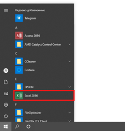
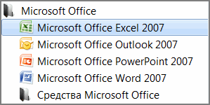
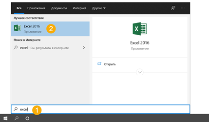
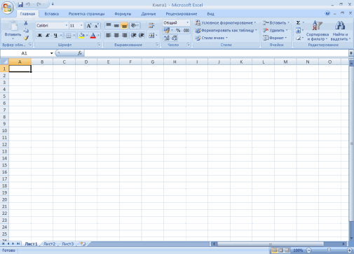

Что такое Эксель
Excel — это программа для компьютера, в которой проводят расчеты, составляют таблицы и диаграммы, вычисляют функции. Она, как и Word, входит в состав пакета Microsoft Office.
Эксель — это что-то вроде калькулятора с множеством функций и возможностей. Здесь можно делать отчеты, производить вычисления любой сложности, сортировать данные, составлять диаграммы и многое другое.
Приложение представляет собой большую таблицу, в которую можно вносить информацию — печатать слова и цифры. Их можно как набирать вручную, так и выгружать из разных систем (например, из 1С).
Используя функции, можно производить с цифрами разные манипуляции: складывать, вычитать, умножать, делить, вычислять процент и многое другое.
Это приложение используют бухгалтеры, экономисты, менеджеры и другие специалисты, которые работают с данными.
Многие думают, что Excel — это только таблицы. Они убеждены, что все таблицы на компьютере составляются именно в этой программе. Но это не так. Это приложение используется, в первую очередь, для вычислений.
Если требуется не только расчертить таблицу со словами и цифрами, но еще и произвести с цифрами какие-либо действия (сложить, умножить, вычислить процент и т.д.), тогда вам нужно работать в Excel. А если же нужно составить таблицу без вычислений, то есть ввести уже готовые данные, то быстрее и удобнее это сделать в Word.
Эксэль, по сравнению с Вордом, значительно сложнее. И лучше начинать работать в этой программе уже после того, как освоите Word. Чтобы изучить Excel досконально, потребуется немало времени. Но, как показывает практика, большинству для работы достаточно лишь базовых навыков.
Как открыть
Щелкните по Пуск и выберите приложение из списка.
Или найдите в списке пункт Microsoft Office, нажмите на него и выберите приложение.
Если не получилось найти, щелкните по Пуск и прямо в открытом окне напечатайте excel.
Примерно так выглядит окно программы (2007-2019):
